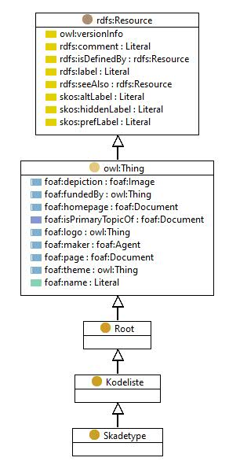

https://ontologi.atlas.vegvesen.no/v441/core/v441-owl#Skadetype
Class Skadetype

rdf:type
owl:Class
rdfs:label
Skadetype
Damage type
rdfs:subClassOf
Kodeliste
owl:disjointUnionOf
[
Annen_skade_eller_mangel
,
Skade_pa_tre
,
Skade_pa_betong
,
Mangel
,
Skade_pa_stein
,
Skade_i_grunnen
,
Skade_pa_slitelag_eller_fuktisolasjon
,
Materialuavhengig_skade
,
Skade_pa_stal
]
kode
-
References
as owl:disjointUnionOf (
Kodeliste
)
as rdfs:range (
HarSkadetype
)
as rdfs:subClassOf (
Skade_i_grunnen
,
Skade_pa_stein
,
Materialuavhengig_skade
,
Skade_pa_slitelag_eller_fuktisolasjon
,
Annen_skade_eller_mangel
,
Mangel
,
Skade_pa_tre
,
Skade_pa_betong
,
Skade_pa_stal
)
Generated with
TopBraid Composer
by
TopQuadrant, Inc.